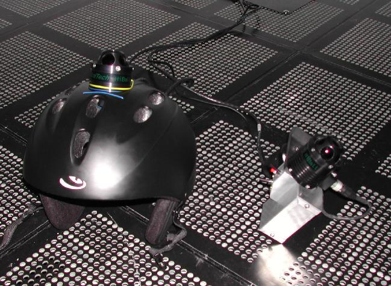
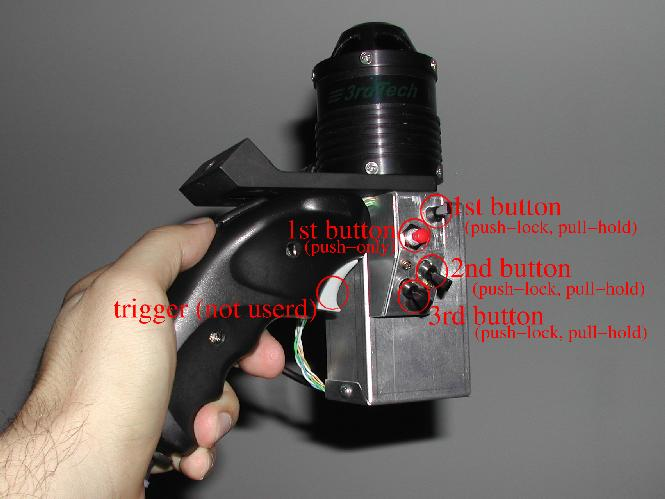

README for using ACES VisLab hiBall head tracker
File: milagros.tacc.utexas.edu:
/lusr/HiBall/doc/milagros_tacc_utexas_edu_README.txt
Contact: Makoto Sadahiro makoto@tacc.utexas.edu
Date written: January 23, 2004
Date updated: March 11, 2006
Intro:
As of December 2003, the head tracking system in ACES VisLab is an optical tracker, called HiBall, from 3rdTech. The system is composed of a headgear, a wand, LED rails on ceiling, Dell windows box as processor and few software applications. Both trackers on the headgear optically senses LED emissions from the rail on ceiling. The server on Dell box calculates your current position and rotation on both headgear and wand. The Dell box will act as a server to provide head tracking information over network to multiple clients simultaneously. This document is written to explain how to set up environment and how to run hiBall client side daemon on sgi machines. A client daemon on the sgi's fetches information generated by the server, and passes it to any application by using a UNIX pipe. You may use your own application to fetch the signal or use commercial tools.

( Here is the head tracker on a helmet. )

( Here is what the wand looks like. Larger housing contains mouse circuit board. )
hiBall_client environment installation:
There is nothing you need to do for hiBall server side. You will only need to set up your account for hiBall_client daemon. There is a script to set up visualization environment. The scrip will setup your account for hiBall, CAVElib and vGeo. Running this script will be the easiest way to set up your user account for immersive environment. Issue the following command.
> /lusr/immersive_env/bin/create_immersive_env.milagros_tacc_utexas_edu.csh
This script assumes you are using csh/tcsh. If you are using another type of shell, please talk to us. The script will create few files in your home directory. The script will also add a line
source ${HOME}/.milagros_env
at the end of .cshrc in your home directory. This is your original sourcing point to all of environment that you will need for the immersive environment on “milagros.tacc.utexas.edu”. Now, environment installation is done. Issue a command
> source ~/.cshrc
to let new setup to take effect, or you may re-login. Now your account is setup to run hiBall_client daemon. The environment file,
${HOME}/.user.milagros.tacc.utexas.edu.hiBall_env
is where you will add your own environment values. There is a section that tells to add your own environment. The first line is
source /lusr/HiBall/env/milagros.tacc.utexas.edu.hiBall_env
Do not comment this out. Your own environment is to be added after this line. There is a section in the file to instruct you to add your environments. You may want to take a look at these files to see what kind of environment value is used so you can override what you need in your environment file for hiBall_client on milagros. If you are confused, look into the account of username, testenv, to see how source and setenv is done. This account is normally setup for minimal immersive environment.
The hiBall hardware and server side application:
The hiBall tracker's hardware and server side application is maintained by TACC personnel. Please make an arrangement with us when you need hiBall server to be running.
Running hiBall_client daemon:
If installation of environment above is done correctly, you should now see a path to
/lusr/HiBall/bin
If you issue a command as
> hiBall_client
, you are invoking in default mode which location of the UNIX named-pipe is set to ${HOME}/.tracker.pipe that is also a default location to a tracker input daemon, trackd, for CAVElib applications. If you are running one copy of CAVElib based application with hiBall head tracker, this is all you need to do. If you are writing script to automate hiBall_client invocation, we recommend to explicitly specify pipe name and hiBall_server:port name. With newer versions, options should be basically only added, but it is possible we have to change default tracker to newer and better tracking system in close future, for example.
Here are current options for hiBall_client. Options are subject to be expanded in future, in later version of hiBall_client.
hiBall_client [-verbose] [-quiet] [-file] [station_name]
-verbose: prints tracker position and rotation
-quiet: ignore warnings
-file: specifies named-pipe location
-host: :
Current default mode (invoking hiBall_client without specifying options) is
-host: TRACKER_DEFAULT_HOST <- hiball.tacc.utexas.edu:39684
-file: TRACKER_DEFAULT_PIPE <- ${HOME}/.tracker.pipe
-verbose: off
-quiet: off
If you need to set separate pipe file location, like for running 2nd copy of client for another application, you can either use -file option or specify TRACKER_DEFAULT_PIPE by
> setenv TRACKER_DEFAULT_PIPE foo.pipe
where foo is the path + file name for new location. You may run as many copies of hiBall_client as you wish. Please do not create pipe file outside of your account. hiBall_client will do its best to clean up after itself, but it is not guaranteed it will always delete pipe file when it is terminated.
You may terminate hiBall_client by issuing ctrl-C. Since it will attempt to clean the pipe, you should expect broken-pipe with corresponding daemon.
makoto@tacc.utexas.edu
ACES 2.340
(512)475-6954
TEXAS Advanced Computing Center
Visualization and Data Analysis Group
updated: March 11th 2006